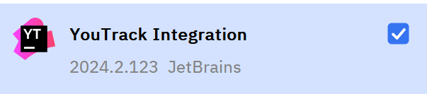
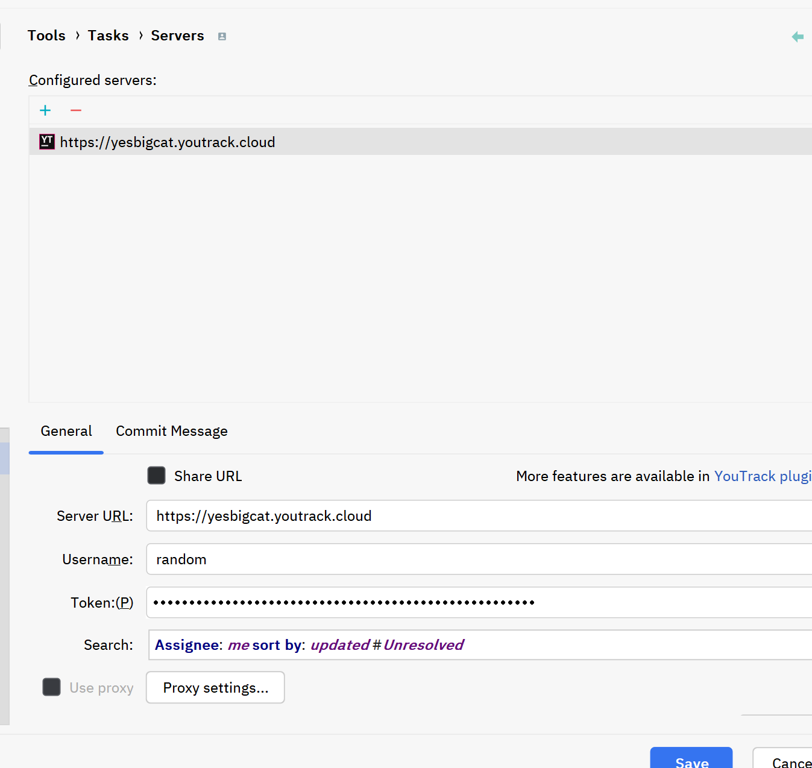
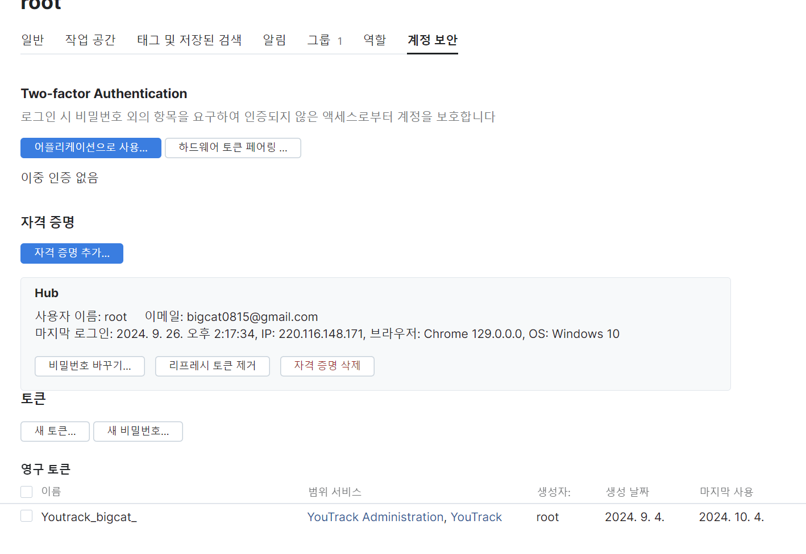
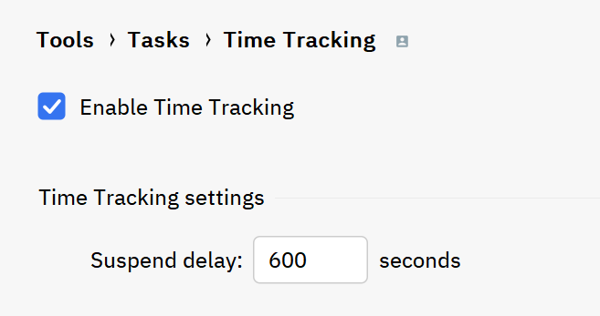
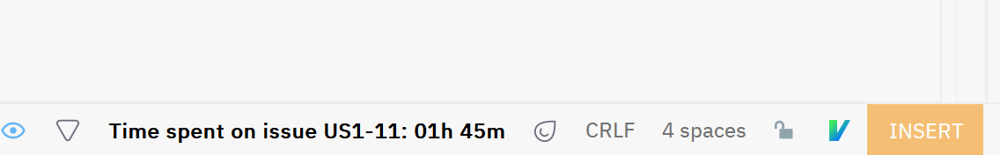
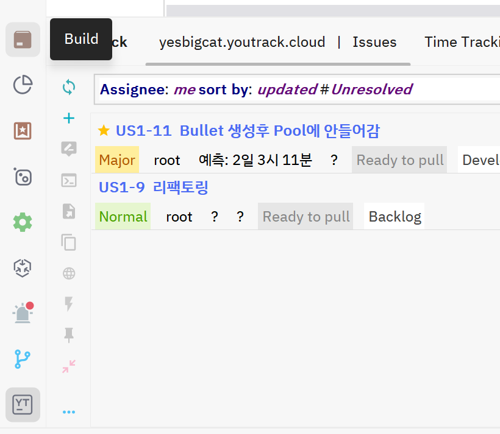

YouTrack Rider 연동
- 플러그인 설치
YouTrack Integration 플러그인을 찾아 설치 합니다.
 아래 설정 화면으로 이동합니다.
Configure:
 Server에서 계정의 youtrack 주소와 youtrack의 계정정보를 기입합니다.
토큰은 아래의 설정메뉴로 이동하여 발급 받아 기입합니다.
토큰발급:
 Time Tracking은 해당 설정시간동안 반응없으면 worktime이 자동 stop됩니다.
 작업중이면 시간이 자동으로 체크됩니다.
 아래와 같은 해당 탭이 생성이 되어 이제 부터 에디터에서 관리할 수 있습니다.

Last modified: 11 October 2024